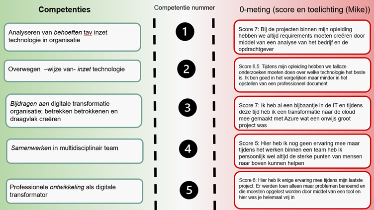
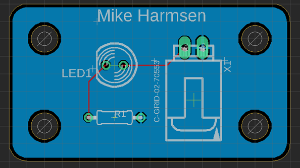

Wekelijkse updates - Smart Technology
Deze week was de eerste week van de minor. We begonnen in de Meshalle in Wijchen. De dag startte met een introductie van de docenten. Er werd verteld wie iedereen was en welke vakken ze in de minor zouden geven. Daarna speelden we met de klas twee spelletjes om elkaar beter te leren kennen. Eerst deden we een oefening waarbij we moesten afspreken wanneer we tegelijkertijd een stap naar voren zouden zetten. Eerst mochten we praten, maar daarna moest het zonder praten, en uiteindelijk blind én zonder te praten. Vervolgens stonden we in een kring, en moesten we een naam zeggen. Degene die werd genoemd moest een andere persoon naast zich aantikken, die dan weer een nieuwe naam noemde. Zo leerden we elkaars namen kennen. 's Middags kregen we direct de eerste les Smart Business. Dit was vooral een introductie over de course en waar we het ongeveer over zouden hebben. Ook speelden we een extra spelletje om de docent beter te leren kennen. Op de tweede dag hadden we Smart Technology. Hier gingen we aan de slag met een Arduino. We moesten ervoor zorgen dat er een lampje ging branden als de lichtsensor onder een bepaalde waarde kwam. Uiteindelijk is het doel om een systeem te bouwen dat detecteert wanneer een plant water nodig heeft en deze dan ook daadwerkelijk water geeft. Al met al heb ik door deze week erg veel zin in de minor gekregen. We gaan leuke workshops doen, zoals programmeren, solderen en werken met een 3D-printer. De klas is heel leuk en gezellig, en na korte tijd was de ongemakkelijkheid er al af, volgens mij. Dit kwam vooral doordat we veel groepsopdrachten deden, waardoor we elkaar snel leerden kennen.
De week begon met Smart Connection. Deze les ging vooral over het leren hoe de programmeertalen HTML en CSS werken. Omdat ik een achtergrond in ICT heb en deze talen al als vakken had tijdens mijn opleiding, heb ik hier al behoorlijk wat ervaring mee. Tijdens de les ben ik alvast begonnen met het bouwen van mijn portfolio website. Wel heb ik te horen gekregen dat we het ook gaan hebben over API’s en dergelijke, en daar heb ik nog geen ervaring mee. Ik hoop dat deze lessen mij kunnen helpen om daar meer over te leren.
Op woensdag 18 september hadden we een workshop over business, waar Geert Rensen, Chief Customer Officer bij Be Informed, ons wegwijs maakte in de waarde van een business model canvas. We begonnen met een aantal spelletjes om de theorie in praktijk te brengen. Als eerste moesten we, op basis van een casus, het business model canvas invullen voor een bedrijf dat marktaandeel verloor in de markt van WA-verzekeringen. Daarna moesten we een pitch voorbereiden waarbij we, met behulp van technologie, een oplossing presenteerden om Axa te helpen de markt terug te winnen. Ons idee was een app die het rijgedrag van bestuurders bijhield. Bestuurders konden korting krijgen op hun premie als ze goed reden, terwijl roekeloos rijgedrag resulteerde in maximaal twee waarschuwingen, waarna de premie zou stijgen. Het doel was om veiliger rijgedrag te stimuleren en zo het aantal schadeclaims te verminderen. Tijdens onze pitch kregen we van Geert de feedback dat we PowerPoint-slides hadden moeten gebruiken om onze presentatie visueel te ondersteunen. Verder vond hij onze pitch krachtig en goed doordacht, met heldere uitgangspunten over hoe de app precies zou werken.
Wat ik wil leren:
Hoe zet je een BMC (Business Model Canvas) in?
Het nut van een BMC.
Hoe ga je om met irrationele werkgevers?
Wat is een business case en hoe maak je die?
Wat ik heb geleerd:
Ik weet nu wat een BMC is en hoe je de verschillende vakjes invult op basis van een casus.
Het nut van een BMC is dat het helpt om de impact van toekomstige aanpassingen op de bedrijfsvoering in kaart te brengen.
Het omgaan met irrationele situaties komt nog aan bod.
Een business case gaan we later nog verder uitdiepen, dus deze vraag kan ik later beantwoorden.
Daarnaast hadden we deze dag ook nog de les Smart Me, waarin we begonnen met het creëren van de 0-meting op de competenties.

Door het maken van dit schema kreeg ik inzicht in hoe ik mezelf op zowel persoonlijk als professioneel gebied nog verder kan ontwikkelen tijdens deze minor. Een goed voorbeeld hiervan is samenwerken in een multidisciplinair team. Dit heb ik nog nooit gedaan, omdat we tijdens mijn opleiding alleen projecten hadden binnen mijn eigen klas.
We kregen ook een les over de STARR-methode (Situatie, Taak, Actie, Resultaat en Reflectie). Hierbij is de actie heel belangrijk: wat heb je precies gedaan of gezegd? Als je hier goed op terugblikt, weet je precies wat je de volgende keer anders moet doen of juist moet herhalen.
Technology Les: PCB Designen
Tijdens de technology les moesten we een PCB (Printed Circuit Board) ontwerpen.

Dit gaf ons inzicht in de technische processen achter hardware-ontwikkeling en de basisprincipes van het ontwerpen van elektronische schakelingen.
Connection Les: AI en Semantische Vectorruimtes
De les van Smart Connection ging over AI en semantische vectorruimtes. Het idee hierbij is dat je ruimtes definieert waarin je data kunt ordenen en later ook weer kunt ophalen. Semantiek houdt in dat data logisch wordt geordend op basis van hoe vaak het wordt gebruikt, waardoor de data betekenis krijgt. Deze vectorruimtes worden gebruikt in deep learning, waarbij AI leert van geordende, grote hoeveelheden data.
In het begin vond ik deze onderwerpen lastig te begrijpen, zelfs met mijn technische achtergrond. Gelukkig werd alles op een heel toegankelijke manier uitgelegd door Raoul, in simpele bewoordingen en met veel voorbeelden. Hij legde uit dat dit onderwerp veel te maken heeft met wiskunde, wat me aanvankelijk afschrikte. Maar Raoul stelde ons gerust en beloofde dat hij wiskunde zou uitleggen zonder echt wiskundige formules te gebruiken. Dit is hem ook zeker gelukt door het gebruik van veel visuele voorbeelden, wat ik erg fijn vond.
Raoul gaf ook aan dat we niet getoetst zouden worden op deze onderwerpen. Het doel van de lessen is om de kennis later te gebruiken bij het maken van de juiste keuzes. Mijn leerdoel voor deze les was het begrijpen van een semantische vectorruimte, en ik denk dat ik dat nu redelijk duidelijk kan uitleggen, zoals ik hierboven heb gedaan.
Daarnaast leerde ik over ontologieën, wat in feite een logische database is waarin verbanden worden gelegd tussen verschillende gegevens. Het voordeel van een ontologie ten opzichte van een vectorruimte is dat een ontologie geen dingen kan "verzinnen". Het systeem weet alleen wat het weet, en als het iets niet weet, zal het dat simpelweg aangeven.